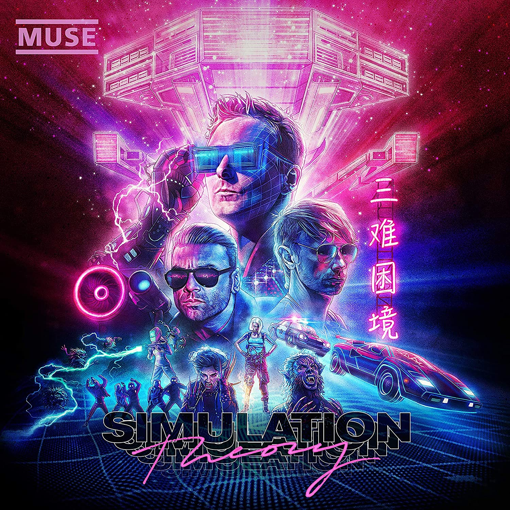
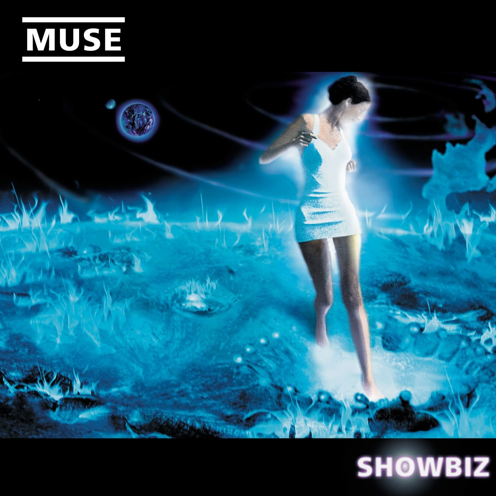
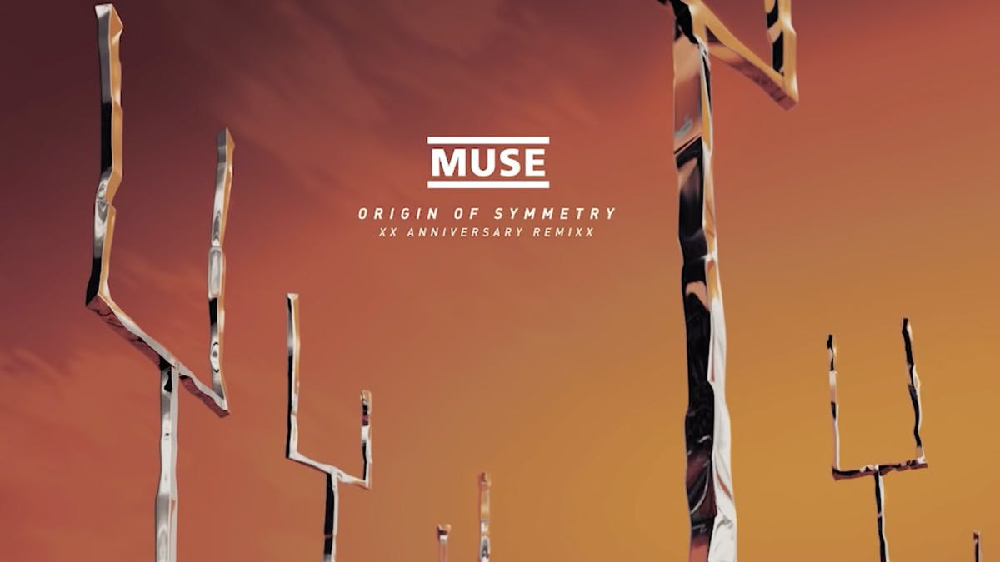
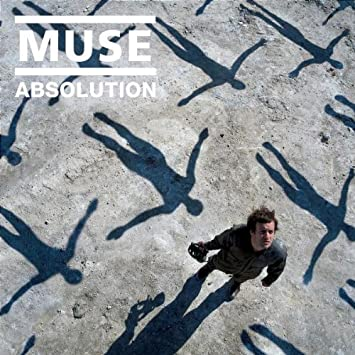
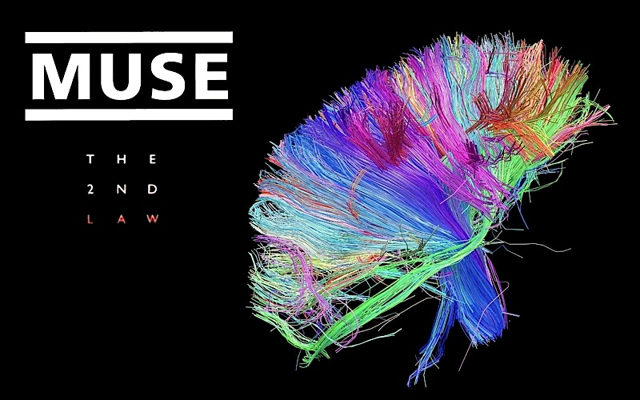
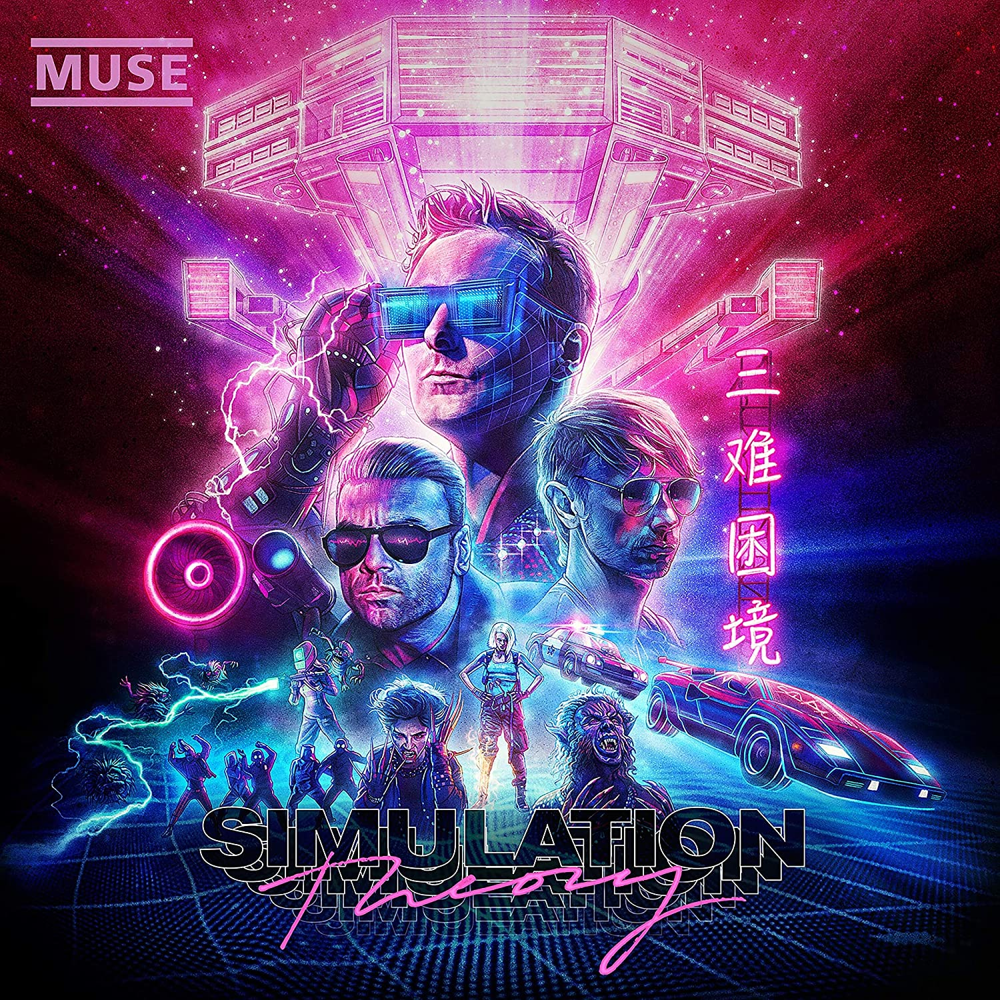

DISCO
AÑO
CARATULA

Su discografía consiste en 6 álbumes de estudio, 2 en vivo, y 41 sencillos.
Banda británica de rock formada en 1994 en Inglaterra.
DISCO |
AÑO |
CARATULA |
| Showbiz | 1999 |  |
| Origin of Symmetry | 2001 |  |
| Absolution | 2003 |  |
| Black Holes and Revelations | 2006 | |
| The Resistance | 2009 | |
| The 2nd Law | 2012 |  |
Su discografía consiste en 6 álbumes de estudio, 2 en vivo, y 41 sencillos. |
||